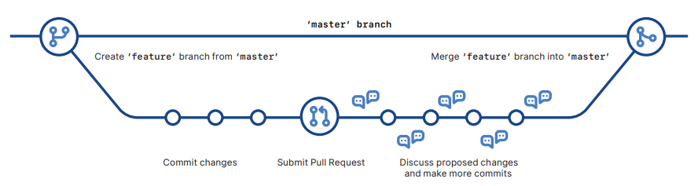

Git_Tutorial10#
Git Pull, Fetch, and Merge
When doing group work/collaboration on a code project, it is important to always have the most recent changes on your local machine
You can do this using a few Git commands
Fetch is used to get the history of the changes
git fetch origin
Now check the status so that we can see the how behind our code is from the updated code
git status
Now we can check the exact differences between our code and the updated code in a few different ways:
git log origin git diff origin
Now we can use merge to combine our current branch, with a specified branch (the branch with the updated code)
git merge origin/<branchName>
Finally we can double check that we are up to date using status
git status
There is also a shortcut to doing those commands above, which is to use the pull command, which is the combination of fetch and merge
This shortcut came out after fetch and merge were created
You can almost always use the pull command, unless you wanted to merge one change at a time
git pull origin
Keep in mind:
Users should replace “origin” with the appropriate remote name if they have multiple remote repositories
When using git pull, if there are any conflicts between your changes and changes from the remote repository, this command will attempt to auto-merge but may require manual resolution
You may face an issue known as a merge conflict, which means that Git was unable to successfully merge the branches, which can be due to a variety of different issues
I would recommend looking at the GitHub website for solutions to this issue, since there is no one universal solution
Pull requests
Pull requests are used to propose your changes to be reviewed, and be merged into the main branch
You would typically use a pull request in a collaborative workflow, especially when you are working with a repository that you do not have direct access to
Pull requests allow maintainers of the repository to review changes and see differences between branches before merging branches into the main branch
To create a pull request perform the following steps in GitHub:
Log into your GitHub account, and open your repository
Click the pull requests tab of your repository, and then click new pull request
In the example comparisons box, select the branch you made, to compare with the main branch
Look over the differences between branches, and make sure that you are ready to submit the request
Click create pull request, and give the request a title and description if you would like to
Now your collaborators can review your edits and make suggestions
When ready, you can merge your pull request by doing the following:
At the bottom of the pull request, click merge pull request
Click the confirm merge button
Now your branch has been merged, and you can safely delete it if you would like!
